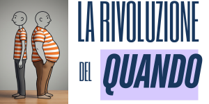

Smetti di contare le calorie. Inizia a contare le ore.Il digiuno intermittente non è uno strumento universale. 2 minuti di quiz per scoprire se fa per te e quale protocollo è su misura per il tuo corpo.
Verifica se il tuo corpo è pronto per il digiuno
Scopri quale protocollo è perfetto per te (donne, atleti, biohacker...)
Saprai esattamente quali sezioni del libro leggere per primi
✓ 100% gratuito ✓ Nessuna email richiesta ✓ Risultato immediato